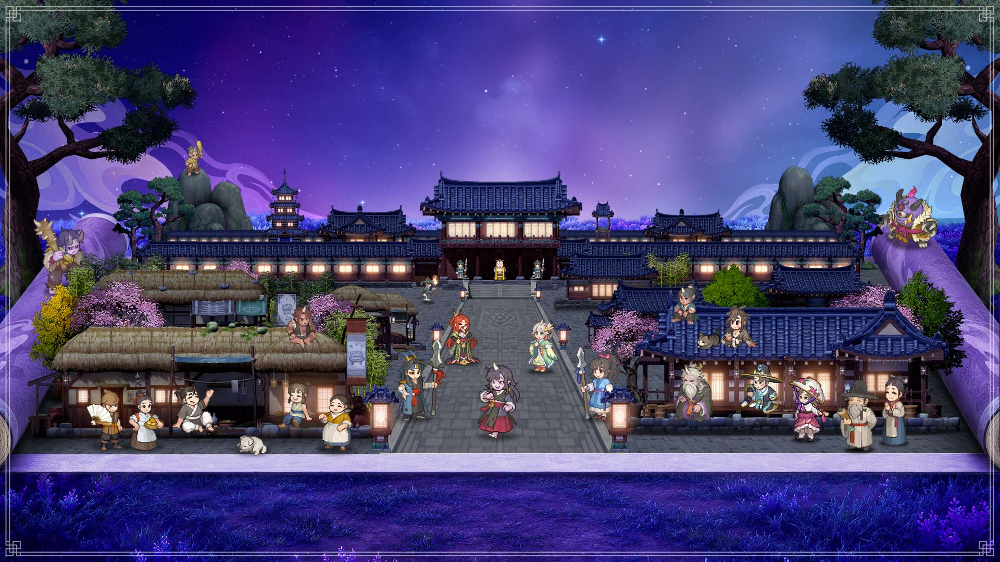
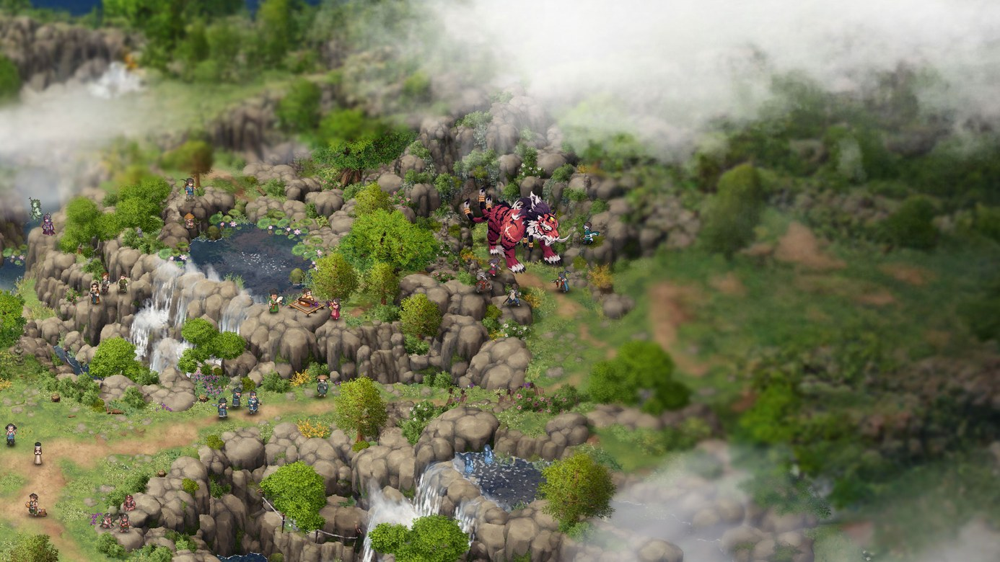

도깨비의세계 필드보스 시간 요일별 일정표, 신기 쟁탈전 미혹의 정원 문파전 시간까지 한 장으로
10월 8일에 정식 오픈한 도깨비의세계(카카오게임즈·슈퍼캣 MMORPG)는 필드 보스가 몇 시인지, 문파 전투가 무슨 요일인지가 보스토벌·문파 전투·공지에 나뉘어 적혀 있는데요. 그래서 요일과 시각을 한 장으로 모았어요. 시각이 딱 정해진 콘텐츠를 낙화의 전장 요화선녀 22:00까지 포함해서 먼저 표로 보고, 매일·매주 돌아오는 갱신 시각이랑 시간 상관없이 열려 있는 콘텐츠는 뒤에서 따로 정리할게요. 이 글은 10월 9일 밤에 확인한 공식 공지 기준이고, 문파 콘텐츠는 시즌 1 일정이라 이후에 바뀔 수 있으니 공지는 한 번씩 확인해 보세요.

정식 오픈 첫 주, 저녁마다 도사들이 모이는 시간대가 정해져 있어요
이미지 출처: 카카오게임즈 도깨비의세계 공식 사전예약 페이지
도깨비의세계 필드보스 시간, 요일별 일정은 이렇게 돌아가요
시각이 정해진 콘텐츠는 필드 보스가 매일 20:00 ~ 20:05, 문파 전투(신기 쟁탈전·미혹의 정원)가 금요일과 토요일 저녁에 하나씩, 낙화의 전장 요화선녀가 매일 22:00이에요.
요일만 확인하면 그날 저녁 일정이 바로 나와요. 10월 9일 금요일 저녁은 20:00 산신 산군대호, 신기 쟁탈전 매칭 20:20 ~ 21:30, 22:00 낙화의 전장 요화선녀 순서로 흘러가요.
| 요일 | 필드 보스 20:00 ~ 20:05 | 문파 전투 20:20 ~ 21:30 | 낙화의 전장 22:00 |
|---|---|---|---|
| 월 | 산신 산군대호 | - | 요화선녀 |
| 화 | 해골장군 | - | 요화선녀 |
| 수 | 산신 산군대호 | - | 요화선녀 |
| 목 | 해골장군 | - | 요화선녀 |
| 금 | 산신 산군대호 | 신기 쟁탈전 | 요화선녀 |
| 토 | 해골장군 | 미혹의 정원 | 요화선녀 |
| 일 | 산신 산군대호 | - | 요화선녀 |
필드 보스가 끝나는 20:05부터 문파 전투 매칭이 열리는 20:20까지는 15분이 비니까, 금·토엔 보스를 치고 바로 문파 쪽으로 넘어가셔도 시간은 충분하죠. 문파 전투는 매칭이 21:30까지라, 늦게 잡히면 22:00 낙화의 전장 요화선녀까지 숨 돌릴 틈이 짧을 수 있어요. 요신 토벌령이랑 결계지 방어는 고정 시각이 없어서 아래에서 같이 풀어 드릴게요.
필드 보스는 어떻게 참여하고, 뭘 받나요?
필드 보스는 출현 시간인 5분 안에 단독이든 파티든 피해를 쌓으면 보상을 받는 콘텐츠예요.

필드 위에 붉은 호랑이 모양 몬스터가 보이는 공식 장면이에요
이미지 출처: 카카오게임즈 도깨비의세계 공식 사전예약 페이지 (가로 비율로 잘라 사용)
- 산신 산군대호는 월·수·금·일, 해골장군은 화·목·토에 나오고 약점은 각각 요수 속성, 원귀 속성이에요
- 보스가 나오면 메인 화면 좌측 하단에 보스 아이콘과 출현 시간이 뜨고, 눌러서 보스토벌 화면의 [세계지도 이동]으로 가면 걸어가기나 즉시 이동을 고를 수 있어요
- 입문 임무 '[길잡이] 임무'를 끝내면 열리고, 메인 화면 ▶ 메뉴 ▶ 보스토벌로 들어가요
- 보상은 누적 피해량 1~6단계로 받는 피해량 보상과 기여도 순위로 받는 순위 보상, 두 가지예요
10월 9일 임시 점검 이후에는 누적 피해 단계 보상 1~6단계를 참여자 전원이 받을 수 있게 바뀌었고, 각 단계의 금전도 늘었다고 해요. 점검 전에 필드 보스 보상을 못 받으셨다면 우편함 서신으로 10월 15일 23:59까지 수령할 수 있어요.
문파 전투 시간은 신기 쟁탈전이 금요일, 미혹의 정원이 토요일이에요
시즌 1에서 신기 쟁탈전은 매주 금요일, 미혹의 정원은 매주 토요일에 열리고, 둘 다 진행 당일 14:20까지 문파가 참가 신청을 마쳐야 하고 매칭 시간은 20:20 ~ 21:30이에요.
| 콘텐츠 | 첫 진행 | 신청 마감 | 진행 |
|---|---|---|---|
| 신기 쟁탈전 | 10월 9일(금) | 당일 14:20 | 20분 진행 |
| 미혹의 정원 | 10월 10일(토) | 당일 14:20 | 15분 진행 |
- 신청은 문주나, 권한을 받은 부문주가 [참가 신청]으로 해요. 문파원은 신청할 수 없고, 신청을 안 한 문파는 그 회차에 참여할 수 없어요
- 신기 쟁탈전은 최대 4개 문파가 신기를 두고 붙고, 두 콘텐츠 모두 다른 서버 문파와 만나요. 게임 가이드에는 유니버스 매칭이라고 적혀 있는데 서버 그룹 안내 공지(7650)는 같은 이름의 서버 1·2·3을 한 그룹으로 적어서, 공식 글끼리 다르게 적힌 칸이에요
- 보상은 신기 쟁탈전이 문파원 3명 이상·문파 점수 300 이상·개인 기여도 120 이상, 미혹의 정원이 5명 이상·300 이상·기여도 30 이상을 모두 채워야 받아요
매칭 시간은 20:20 ~ 21:30이에요. 공식 플래너에는 신기 쟁탈전과 미혹의 정원 모두 20:20 시작으로 나와 있는데, 공지에 따르면 신청을 마친 문파는 그 시간대 안에서 임의로 매칭되니 우리 문파가 실제로 몇 시에 붙는지는 달라질 수 있어서 표에는 매칭 시간 범위만 적었어요. 시즌 1은 각 콘텐츠가 주 1회이고, 이후 시즌에는 일정과 방식이 바뀔 수 있으며 바뀌면 공지로 알려 준다고 해요.
요신 토벌령이랑 결계지 방어는 몇 시에 시작하나요?
요신 토벌령과 결계지 방어는 고정 시각이 없고, 문주가 도전을 연 시각에서 5분 뒤에 시작해 5분 동안 진행돼요.
- 시즌은 매주 수요일 05:00에 초기화되고, 시즌 중에는 횟수 제한 없이 도전을 다시 열 수 있어요
- 도전은 문주, 또는 권한을 받은 부문주가 [도전 개설]로 열어요
- 분신을 등록해 두면 직접 참여하지 못해도 그 시간에 분신이 대신 참여해 기록 보상을 받아요
낙화의 전장 요화선녀는 몇 시에 나오나요?
낙화의 전장은 요화선녀가 매일 22:00에 출현해요. 공식 플래너 가이드에도 7일 칸 모두 22:00 출현으로 나와 있어요.
게임 안에서는 메인 화면 ▶ 메뉴 ▶ 플래너(도사 레벨 50 해금)에서 7일 일정을 볼 수 있고, 낙화의 전장 화면의 보스 탭에서는 보스마다 몇 시간 몇 분 후 출현인지 따로 떠요. 중간 보스인 낙화의 잔재·타천의 잔재·화마의 잔재는 가이드 화면에서 요화선녀와 남은 시간이 다르게 떠 있어서, 이쪽은 화면에 뜨는 남은 시간으로 확인해 보시는 게 좋아요.
낙화의 전장은 시즌이 진행되는 동안 서버 그룹끼리 점수를 겨루는 콘텐츠예요. 입문 임무 '[길잡이] 임무'를 끝내면 열리고, 채널 3개와 [심처]로 나뉘는데요. 심처는 시즌 중 열리는 날짜가 따로 있다고 해요. 일일 부활 가능 횟수는 매일 08시에 초기화되고요.
공식 가이드가 테스트 환경 기준으로 만들어진 거라, 접속하셔서 플래너로 한 번 더 확인해 보시면 좋아요.
매일·매주 돌아오는 갱신 시각과 상시 콘텐츠는 따로 모았어요
갱신 시각은 매일 05:00과 수요일 05:00, 낙화의 전장 일일 부활 횟수만 매일 08:00이고, 레이드 보스 백운은 시각 없이 상시로 열려 있어요.
| 시각 | 주기 | 갱신되는 것 |
|---|---|---|
| 05:00 | 매일 | 일일 임무 · 레이드 보상 티켓 1장 지급(최대 10회까지 누적) · 비경 탐험 기본 시간 |
| 05:00 | 매주 수요일 | 주간 임무 · 요신 토벌령·결계지 방어 시즌 · 도사 수행록 시즌(점수 초기화, 누적 점수 보상은 초기화 전에 직접 수령) |
| 08:00 | 매일 | 낙화의 전장 일일 부활 가능 횟수 |
| 상시 | 시각 없음 | 레이드 보스 백운 · 제한 시간 15분 · 4명 기준(인원이 안 차면 일정 시간 뒤 3인 이하 파티로 입장 가능) · 1~5단계 |
수요일 05:00에는 주간 임무, 도사 수행록, 요신 토벌령·결계지 방어 시즌이 한꺼번에 바뀌어서 수요일 아침이 일종의 주간 정리 시간이네요. 백운은 서사 임무 '[첫걸음] 산신의 시련 9'를 끝내면 열리고, 입장에는 보상 티켓이나 추가 티켓이 필요해요. 직접 파티를 만들거나 파티를 구하거나 매칭으로 들어가고, 파티원이 전부 같은 문파면 추가 버프도 붙어요.
자주 묻는 질문
Q. 도깨비의세계 필드보스 시간은 몇 시인가요?
매일 20:00 ~ 20:05, 딱 5분이에요. 5분이 지나면 보스가 사라지니까 20:00 전에 보스토벌 화면이나 좌측 하단 아이콘 위치를 봐 두시면 편하죠.
Q. 도깨비의세계 문파전 시간은 언제인가요?
시즌 1 기준으로 금요일은 신기 쟁탈전, 토요일은 미혹의 정원이고 매칭은 둘 다 20:20 ~ 21:30이에요. 신청이 당일 14:20에 끝나니까 문주님께 낮에 미리 챙겨 달라고 말씀드려 보세요.
Q. 도깨비의세계 요일별 일정은 어떻게 되나요?
매일 20:00 필드 보스가 기본이고, 금요일엔 신기 쟁탈전, 토요일엔 미혹의 정원이 저녁 20:20부터 열려요. 밤 22:00엔 매일 낙화의 전장 요화선녀가 나오고요.
Q. 신기 쟁탈전이나 미혹의 정원도 분신이 대신 해 주나요?
아니요, 두 콘텐츠는 분신을 등록할 수 없어요. 분신이 대신 참여하는 건 요신 토벌령이랑 결계지 방어뿐이라, 금·토 저녁엔 직접 접속하셔야 해요.
Q. 10월 9일 점검 뒤에 일정이 바뀌었나요?
10월 9일 밤에 확인한 공식 공지 기준으로는 일정은 그대로예요. 점검(07:00 ~ 09:00)에서 바뀐 건 보상과 밸런스 쪽이라, 필드 보스 단계 보상은 참여자 전원이 받게 되고 문파 콘텐츠 개인 순위 금전은 20% 늘었어요. 낙화의 전장 보스는 생명력이 줄었고요. 다만 발행 뒤에 바뀔 수 있으니 공식 포럼 공지는 한 번씩 봐 두세요.
도깨비의세계 콘텐츠 스케줄 정리해볼게요
결국 저녁 20:00 필드 보스, 20:20부터 금·토 문파 전투, 밤 22:00 낙화의 전장 요화선녀까지가 저녁 일정이에요. 여기에 아침 05:00 갱신만 더해 두시면 한 주가 훨씬 편해져요. 20:00 산군대호부터 같이 즐겁게 달려 봐요~
✔ 도깨비의세계 같이 보기 좋은 내용
· 도깨비의세계 보물상자 위치 정리, 지역 19곳 상자 91개 미니맵 번호 핀과 상자별 보상
· 도깨비의세계 쿠폰 4종 정리, 코드 입력하는 법과 마감일 한눈에
· 도깨비의세계 쿠폰 도깨비1008, 꿀떡 무기는 언제부터 쓸 수 있나
참고한 곳
· 도깨비의세계 공식 포럼 — 보스토벌 가이드
· 도깨비의세계 공식 포럼 — 문파 전투: 신기 쟁탈전
· 도깨비의세계 공식 포럼 — 문파 전투: 미혹의 정원
· 도깨비의세계 공식 포럼 — 낙화의 전장 가이드
· 도깨비의세계 공식 포럼 — 플래너 가이드
· 도깨비의세계 공식 포럼 — 시즌 1 문파 콘텐츠 일정 및 참여 안내
· 도깨비의세계 공식 포럼 — 10월 9일 임시 점검 및 패치 안내